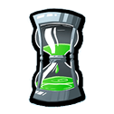

Construye tu nave
Si quieres echar a volar por la galaxia, antes tendrás que construir una nave. Comienzas la partida con una pieza de inicio, a la que irás añadiendo nuevos componentes a medida que el tiempo pasa. Cada nueva pieza debe encajar con los componentes que ya has añadido. Tus rivales estarán construyendo sus naves a la vez que tú, ¡así que tendrás que darte prisa!
En esta página se describe la construcción de una nave en tiempo real. La construcción por turnos sigue unas reglas similares. Aquí puedes encontrar las diferencias.

Clases de naves
Algunas naves son más grandes que otras. La imagen de arriba corresponde a una nave de Clase I, aunque a lo largo del juego también podrás pilotar otras de mayor tamaño (Clase II y Clase III). Todo depende de la complejidad del vuelo que vayas a realizar. Los vuelos de mayor nivel te permiten usar naves más grandes, pero también requieren más cartas de aventura y ofrecen una mayor complejidad.
Las casillas muestran el tamaño y la forma de una nave tal como quedaría si se le añadiera el máximo de componentes permitidos para el vuelo. Debes construir tu nave de modo que cubras tantos de estos espacios como te sea posible.
Revelar componentes
Revela un componente arrastrándolo hasta tu nave. Puedes añadirlo a ella, devolverlo al almacén o reservarlo para más adelante.
Los componentes que hayas revelado también quedarán visibles para tus oponentes. De igual modo, tú también podrás ver los componentes que ellos devuelvan al almacén. A medida que el tiempo pasa, cada vez habrá más piezas al descubierto en la pila central.
Añadir componentes
Arrastra un componente hasta tu nave para comprobar dónde puedes colocarlo, ya que en ese momento todas las casillas válidas se iluminarán. Cuando dejes la pieza en una de ellas, girará hasta que sus conectores encajen con los que ya hay en la nave.
Pulsa sobre el componente que has añadido para hacerlo girar. Solo se detendrá en las posiciones válidas.
Puedes arrastrar ese nuevo componente a otra casilla válida o devolverlo al almacén. Si tratas de dejarlo en una casilla no válida, la pieza regresará automáticamente al último lugar del que la has recogido.
Soldaduras
Cuando arrastras un nuevo componente a tu nave, la última pieza que has colocado en ella quedará soldada en el lugar donde se encuentra. Eso significa que ya no podrás volver a moverla.
Conectores
El juego solo te permite colocar nuevos componentes en ciertas casillas y posiciones. Para entender a qué se deben estas limitaciones, antes debes aprender cómo funcionan los conectores.
Cada pieza tiene una parte funcional y 1-4 conectores. Los conectores pueden ser sencillos, dobles o universales.

Cualquier conector encaja con otro del mismo tipo (excepto los conectores universales, que encajan con todos). Sin embargo, un conector sencillo nunca puede encajar con un conector doble.
Los lados sin conectores son lados lisos y no pueden unirse con ningún conector.

Cada componente que coloques debe integrarse en el conjunto de tu nave. Por lo tanto, si una pieza tiene conectores en varios de sus lados, todas sus conexiones deben ser válidas. Dos lados lisos pueden ser adyacentes y estar uno junto a otro siempre que la pieza añadida comparta una conexión legal por otro de sus lados. Todos los componentes que forman tu nave deben permanecer unidos.
Tranquilo, el juego no te premitirá realizar conexiones incorrectas.
Componentes de la nave
Tu pieza de inicio representa la cabina del piloto. Tiene 4 conectores universales, por lo que te resultará sencillo comenzar a construir desde aquí. El almacén contiene otros muchos tipos de componentes que también te interesa tener:
 Cabinas
Cabinas  Motores
Motores  Cañones
Cañones  Generadores de escudo
Generadores de escudo  Bodegas de carga
Bodegas de carga  Módulos estructurales
Módulos estructurales  Sistemas de soporte vital para alienígenas
Sistemas de soporte vital para alienígenas  Componentes de campaña
Componentes de campaña Una nave bien construida
Tu nave debería ser resistente, estar protegida con escudos y contener todos los cañones, motores, cabinas, baterías y bodegas de carga que puedas necesitar.
Conectores expuestos
Los conectores que no están conectados, es decir, que no son adyacentes a otro conector, se consideran expuestos.
Los conectores expuestos no invalidan la construcción de tu nave, pero incrementan el riesgo de que sufra daños a causa de un meteorito pequeño.
Por si esto fuera poco, también pueden ralentizar el avance de la nave como consecuencia del polvo estelar.

Los extremos de las tuberías que quedan al descubierto se doblan durante el viaje, por lo que Construcciones Móviles S.E.A. concede un premio a las naves que lleguen a su destino con menos conectores expuestos que sus rivales. Si en tu nave hay muchos conectores sin encajar, es posible que sea otro jugador quien se lleve esta bonificación para la nave más bonita.
Reservar componentes
Mientras construyes tu nave, puedes reservar hasta 2 componentes a la vez para utilizarlos más adelante. Solo tienes que arrastrar el componente que quieras reservar hasta una de las dos casillas que hay en la parte izquierda de la nave. Una vez que han entrado en la reserva, estos componentes no pueden regresar al almacén. Añádelos a tu nave cuando más te convenga colocándolos en una casilla válida.

Te recomendamos que utilices los componentes que has reservado antes de que el tiempo se agote. Si no se han incorporado a la nave cuando la fase de construcción ha terminado, sufrirás una penalización al concluir el vuelo. Las piezas reservadas que no se han llegado a utilizar también cuentan como componentes perdidos..)
Consultar las cartas de aventura
Puedes utilizar la División de Pronósticos CoMoSEA mientras estás construyendo tu nave. Consultar las cartas que componen la aventura te dará alguna que otra pista sobre la mejor manera de construir tu nave de cara al próximo vuelo.
Para poder acceder a estas cartas, tienes que haber soldado al menos un componente a tu nave. Pulsa sobre una de las pilas de cartas para ver qué contiene.

Vuelve a pulsar para regresar a la pantalla de construcción. Puedes consultar cada pila tantas veces como quieras, siempre y cuando no haya otro jugador consultando esas mismas cartas.
Consultar las cartas de aventura consume parte del tiempo que podrías haber empleado en construir tu nave, pero saber lo que te aguarda durante el vuelo puede resultar muy útil. Si, por ejemplo, ves muchos planetas, lo más probable es que te plantees añadir un buen número de bodegas de carga a la nave.

Solo el 75% de las cartas de aventuras está disponible para la División de Pronósticos CoMoSEA. El resto seguirá siendo un misterio hasta que te las encuentres de sopetón durante el vuelo. ¡Sorpresa, sorpresa!
Terminar de construir la nave

Cuando te sientas satisfecho con tu nave (o no te quede espacio para colocar fichas), puedes darla por terminada. No es obligatorio haber rellenado todas las casillas.
Para concluir la fase de construcción, solo tienes que arrastrar una de las fichas numéricas que hay en la parte superior de la pantalla y dejarla sobre tu nave. Estas fichas determinan el orden en el que los jugadores alzarán el vuelo. No basta con haber construido una nave perfecta con mucho de todo y sin conectores expuestos. ¡También deberías ser el primero durante el vuelo! Bueno, al menos, la mayor parte del tiempo.
En ciertos casos puede ser buena idea escudarse tras un par de naves, sobre todo cuando tus cañones son más bien flojos y los suyos son un arma letal. Si prefieres tener una ficha numérica de valor superior a la que se indica por defecto, pulsa sobre la pila en la que se encuentran y el resto de números disponibles quedará al descubierto. Ahora ya puedes escoger la posición de salida que más te guste arrastrando esa ficha hasta tu nave.
El reloj

El reloj indica el tiempo que tienen los jugadores para construir sus naves.
Si nadie tiene una ficha numérica cuando la arena del reloj se agota, el juego permitirá que los jugadores sigan construyendo de manera indefinida. Ahora bien, en cuanto alguien arrastre hasta su nave una de las fichas, el reloj dará la vuelta y el resto de los jugadores tendrá un tiempo limitado para terminar la fase de construcción.
En caso de que ya se haya escogido alguna ficha antes de que la arena se agote por primera vez, el reloj dará la vuelta automáticamente.
Cuando la arena del reloj se agote por segunda vez, la fase de construcción habrá llegado a su fin y no se podrán añadir más piezas a las naves. Si aún hay jugadores que no tengan una ficha numérica, deben obtenerla ahora.
A punto para el despegue
Si hay algún jugador que pueda añadir un alienígena a su tripulación, se le ofrecerá la posibilidad en estos momentos. En caso contrario, este se omitirá.
Tu nave ya está lista. ¡Es hora de que comience el vuelo!